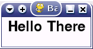

2. Revision: Pygame fundamentals¶
2.1. The basic Pygame game¶
For the sake of revision, and to ensure that you are familiar with the basic structure of a Pygame program, I'll briefly run through a basic Pygame program, which will display no more than a window with some text in it, that should, by the end, look something like this (though of course the window decoration will probably be different on your system):
The full code for this example looks like this:
#!/usr/bin/python
import pygame
from pygame.locals import *
def main():
# Initialise screen
pygame.init()
screen = pygame.display.set_mode((150, 50))
pygame.display.set_caption('Basic Pygame program')
# Fill background
background = pygame.Surface(screen.get_size())
background = background.convert()
background.fill((250, 250, 250))
# Display some text
font = pygame.font.Font(None, 36)
text = font.render("Hello There", 1, (10, 10, 10))
textpos = text.get_rect()
textpos.centerx = background.get_rect().centerx
background.blit(text, textpos)
# Blit everything to the screen
screen.blit(background, (0, 0))
pygame.display.flip()
# Event loop
while True:
for event in pygame.event.get():
if event.type == QUIT:
return
screen.blit(background, (0, 0))
pygame.display.flip()
if __name__ == '__main__': main()
2.2. Basic Pygame objects¶
As you can see, the code consists of three main objects: the screen, the background, and the text. Each of these objects is created by first calling an instance of an in-built Pygame object, and then modifying it to fit our needs. The screen is a slightly special case, because we still modify the display through Pygame calls, rather than calling methods belonging to the screen object. But for all other Pygame objects, we first create the object as a copy of a Pygame object, giving it some attributes, and build our game objects from them.
With the background, we first create a Pygame Surface object, and make it the size of the screen. We then perform the convert() operation to convert the Surface to a single pixel format. This is more obviously necessary when we have several images and surfaces, all of different pixel formats, which makes rendering them quite slow. By converting all the surfaces, we can drastically speed up rendering times. Finally, we fill the background surface with white (255, 255, 255). These values are RGB (Red Green Blue), and can be worked out from any good paint program.
With the text, we require more than one object. First, we create a font object, which defines which font to use, and the size of the
font. Then we create a text object, by using the render method that belongs to our font object, supplying three arguments:
the text to be rendered, whether or not it should be anti-aliased (1=yes, 0=no), and the color of the text (again in RGB format). Next
we create a third text object, which gets the rectangle for the text. The easiest way to understand this is to imagine drawing a
rectangle that will surround all of the text; you can then use this rectangle to get/set the position of the text on the screen. So
in this example we get the rectangle, set its centerx attribute to be the centerx attribute of the
background (so the text's center will be the same as the background's center, i.e. the text will be centered on the screen on the x
axis). We could also set the y coordinate, but it's not any different so I left the text at the top of the screen. As the screen is
small anyway, it didn't seem necessary.
2.3. Blitting¶
Now we have created our game objects, we need to actually render them. If we didn't and we ran the program, we'd just see a blank window, and the objects would remain invisible. The term used for rendering objects is blitting, which is where you copy the pixels belonging to said object onto the destination object. So to render the background object, you blit it onto the screen. In this example, to make things simple, we blit the text onto the background (so the background will now have a copy of the text on it), and then blit the background onto the screen.
Blitting is one of the slowest operations in any game, so you need to be careful not to blit too much onto the screen in every frame. If you have a background image, and a ball flying around the screen, then you could blit the background and then the ball in every frame, which would cover up the ball's previous position and render the new ball, but this would be pretty slow. A better solution is to blit the background onto the area that the ball previously occupied, which can be found by the ball's previous rectangle, and then blitting the ball, so that you are only blitting two small areas.
2.4. The event loop¶
Once you've set the game up, you need to put it into a loop so that it will continuously run until the user signals that he/she wants
to exit. So you start an open while loop, and then for each iteration of the loop, which will be each frame of the game,
update the game. The first thing is to check for any Pygame events, which will be the user hitting the keyboard, clicking a mouse
button, moving a joystick, resizing the window, or trying to close it. In this case, we simply want to watch out for for user trying
to quit the game by closing the window, in which case the game should return, which will end the while loop.
Then we simply need to re-blit the background, and flip (update) the display to have everything drawn. OK, as nothing moves or happens
in this example, we don't strictly speaking need to re-blit the background in every iteration, but I put it in because when things are
moving around on the screen, you will need to do all your blitting here.
2.5. Ta-da!¶
And that's it - your most basic Pygame game! All games will take a form similar to this, but with lots more code for the actual game functions themselves, which are more to do your with programming, and less guided in structure by the workings of Pygame. This is what this tutorial is really about, and will now go onto.
Edit on GitHub